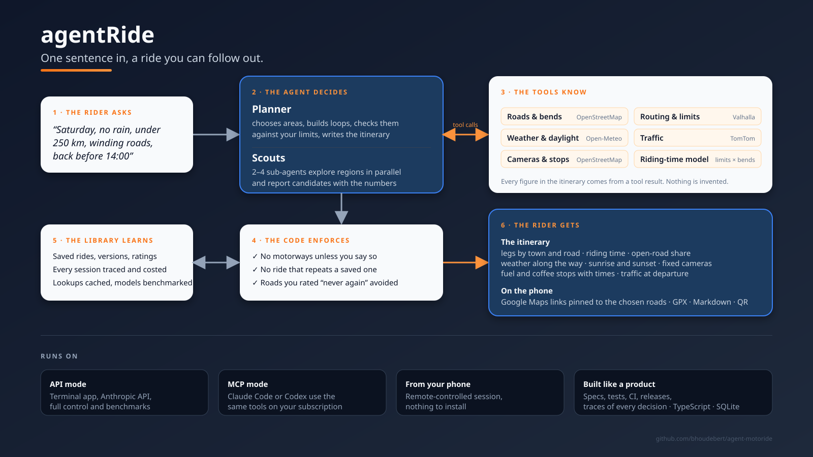

One sentence in, a ride you can follow out.
An AI agent plans a one-day motorcycle loop from real data: roads and bends, speed limits, weather, daylight, traffic, cameras, fuel and coffee stops. The code enforces your rules. Every figure comes from a tool, nothing is invented.
The planner sends scouts to explore regions in parallel, compares their loops on the numbers, and finishes the best one with weather, daylight, cameras, stops and traffic.

An actual itinerary produced by the planner, start point generalised.
“Sunday, leave at 9, no rain, under 220 km and 3 hours of riding, as many bends as this region allows, back before 14:00.”
| # | Leg | Distance | Time |
|---|---|---|---|
| 1 | Start → Sommaing D 40, D 957, D 40 A, D 13 | 41.6 km | 0h44 |
| 2 | Sommaing → Vieux-Mesnil D 942, D 114, D 154, D 107 | 30.4 km | 0h31 |
| 3 | Vieux-Mesnil → Beaufort D 307, D 959 | 12.2 km | 0h12 |
| 4 | Beaufort → Sebourg D 307, D 961, D 2649, D 107 | 33.9 km | 0h33 |
| 5 | Sebourg → Start D 954, D 50 A, D 955, D 938 | 49.4 km | 0h56 |
Plus two Google Maps links pinned to the chosen roads and split at the first pause, a GPX for Liberty Rider or Garmin, and a Markdown copy. Weather shown as forecast a week ahead.
A terminal app with a menu and a refine prompt, on your Anthropic API key. Full control, schema-validated answers, cost per run.
Claude Code or Codex use the same tools on your existing subscription. Slash commands in Claude Code, plain words in Codex.
Drive a Claude Code session on your computer or a VPS from the Claude app. Nothing to install on the phone.
A tool-use loop with parallel scouts over deterministic tools: OpenStreetMap, Valhalla routing, Open-Meteo, TomTom.
No motorways unless allowed, no duplicate rides, roads rated “never again” avoided, route ids validated.
Saved rides with versions and ratings, cached lookups, a ride-day briefing with a go or no-go.
Every session traced and costed, replayable step by step; models benchmarked on cost and ride quality.
Specs per capability, unit tests with simulated services, CI, CodeQL, release automation. TypeScript and SQLite.
The tools are a Model Context Protocol server: any MCP client can plan rides with them, today Claude Code and Codex.
MIT licence, contributions welcome. Data attributions and disclaimers in the notice.
git clone https://github.com/bhoudebert/agent-motoride && cd agent-motoride npm install cp .env.example .env # set RIDE_HOME; ANTHROPIC_API_KEY for API mode npm run check # what is set up, what answers npm run ride # API mode · or start `claude` here for MCP mode
Full documentation in the README.